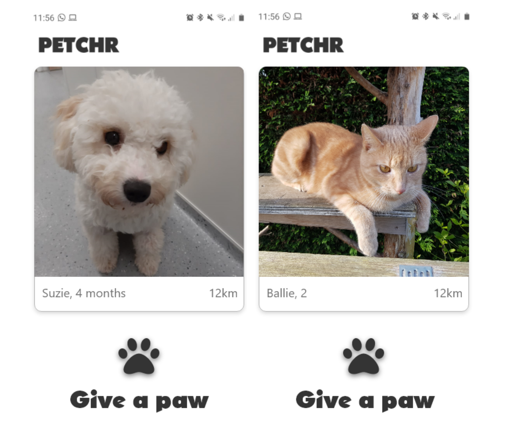
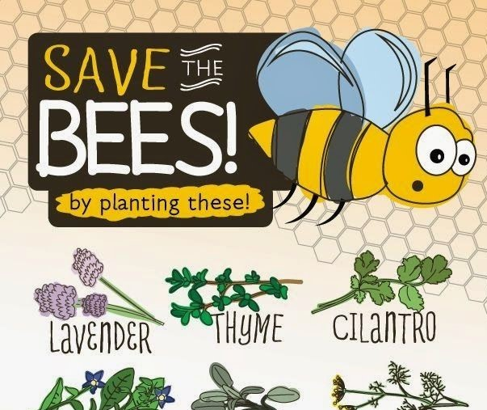
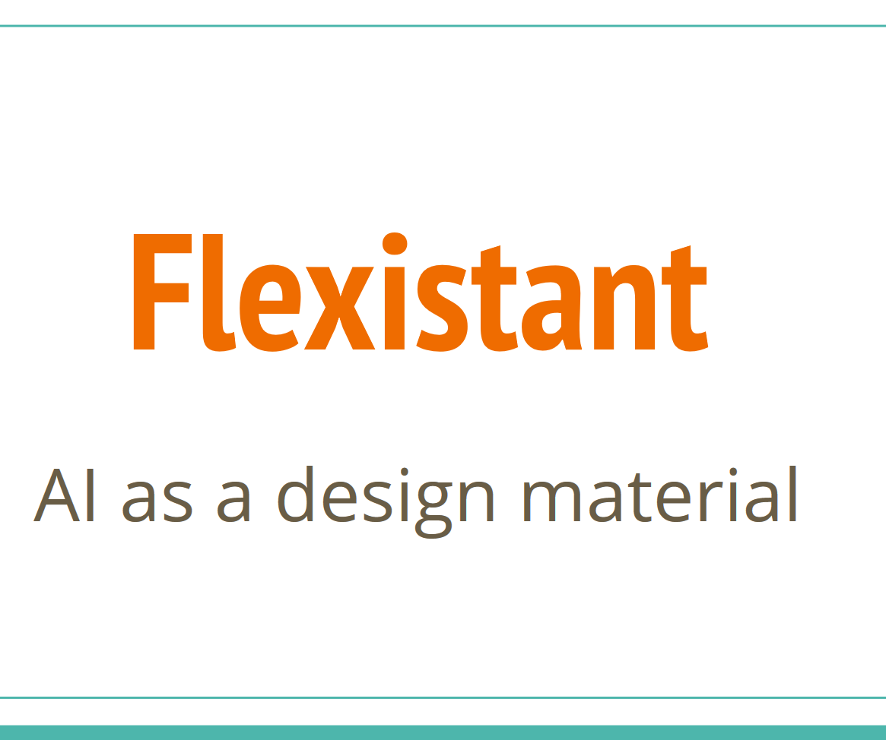

Mijn werk.
Dit zijn mijn projecten.

Petchr is mijn trots! Het is een soort Tinder, maar dan voor huisdieren. De huidige manier om een nieuw huisdier te zoeken is gebrekkig.
Ik vind dat het proces beter kan en zo is Petchr ontstaan.
Documentatie (desk research, prototypes, testing)

Bijen zijn erg nuttig voor onze samenleving. Helaas loopt de bijensterfte steeds hoger op. Om dit tegen te gaan hebben wij Beeready gemaakt. Beeready
is een app waar je planten in je tuin kunt scannen om te kijken hoe beeready jouw tuin is en wat je kunt planten om te helpen. Hoe meer beeready, hoe hoger je score.
Screenshots

Flexistant is een app gemaakt voor het bedrijf LeasePlan. Wij hebben bestaande concepten van LeasePlan gecombineerd om een slimme app te maken waarin je gebruikte auto's kunt huren.
Dit om hun gebruikte auto's, die normaal niet gebruikt worden en ruimte innemen, een nieuw doel te geven.
Screenshots